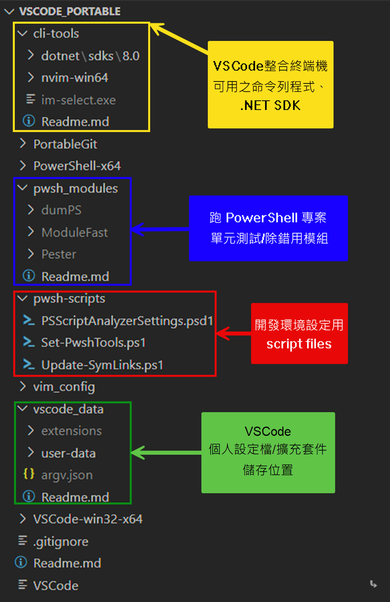
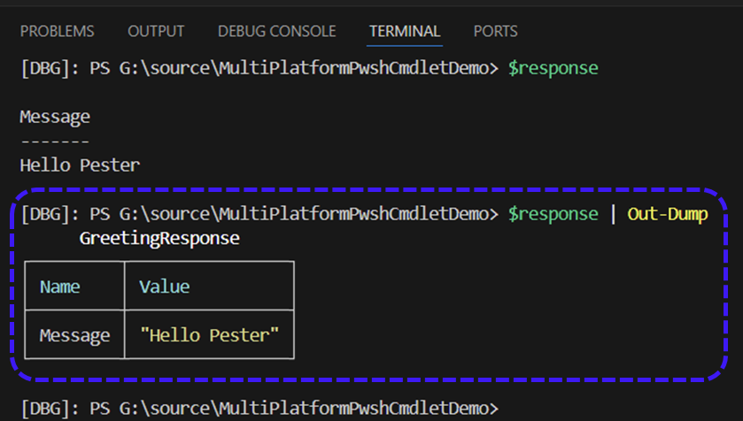
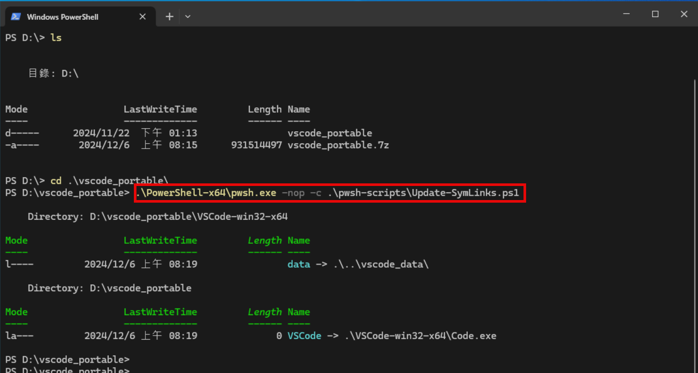
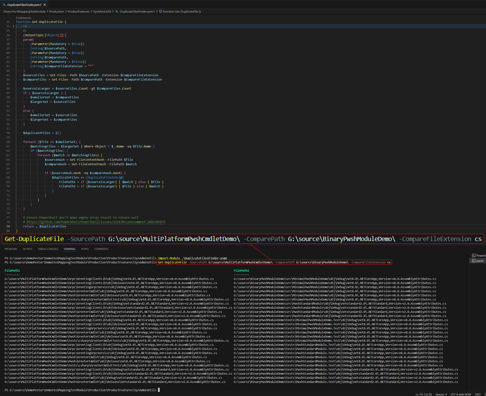
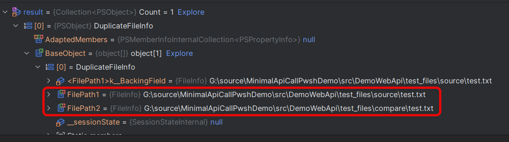
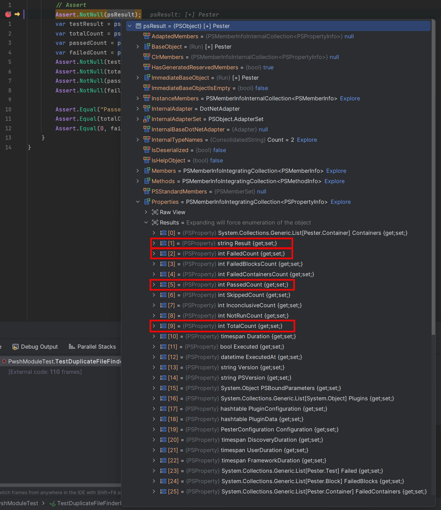

Slide URL
由於 .NET SDK 會根據作業系統＆CPU架構不同而有不同的安裝方式，提供以下版本的 Portable VSCode + PowerShell Extension + C# 相關開發擴充套件 的範例開發環境：
除了要手動開啟Windows『開發者模式』設定以及將同捆的 .NET SDK 的執行檔路徑到環境變數之外，其他的都是使用 Portable 版本的開發環境：
開發環境的檔案目錄架構:

使用獨立的 PowerShell Module 目錄避免因為不同專案需要的各種版本 PowerShell Module 互衝，或是和系統層級的 Module 混淆。
因此要在 PowerShell Module 目錄內下載並安裝 “ModuleFast” 這個工具型 PowerShell Module，用此命令列工具安裝 PowerShell Module 時可下指令指定安裝來源、安裝位置、模組版本。
例如以下範例，從 nuget.org 安裝 Pester v5.6.1 版本到 D:_portable_modules 目錄：
@{ModuleName='Pester';ModuleVersion='5.6.1'} | Install-ModuleFast -Source api.nuget.org/v3 -Destination D:\vscode_portable\pwsh_modules
另外還有一個好用的開發用 PowerShell 指令列工具模組 PowerShell.dumPS，可以用來在 VSCode 中斷點除錯時，使用 Debug Console 快速查看 PowerShell 物件的類別、屬性值資訊。

在 pwsh-scripts 目錄的開發環境設定用 script 檔案：
PSScriptAnalyzerSettings.psd1
用來控制 VSCode 官方 PowerShell Extension 內建的 PSScriptAnalyzer(PowerShell Syntax Linter) 設定檔。
Set-PwshTools.ps1
替代 PowerShell Profile 的設定檔，用來設定 VSCode 整合終端機中 PowerShell 命令列的自動完成功能相關設定以及添加一些類似 Unix 環境的檔案命令。
"terminal.integrated.profiles.windows": {
"PowerShell": {
"title": "Bundled pwsh",
"path": "D:\\vscode_portable\\PowerShell-x64\\pwsh.exe",
"args": [
"-nol",
1 "-nop",
"-noe",
"-ex",
"RemoteSigned",
2 "-Command",
"Invoke-expression \". D:\\vscode_portable\\pwsh-scripts\\Set-PwshTools.ps1\""
]
}
},-nop 參數避免執行目前系統/使用者等級的 PowerShell Profile 設定檔
Invoke-Expression ". D:\vscode_portable\pwsh-scripts\Set-PwshTools.ps1" 來替代。
Update-SymLinks.ps1
用來更新/恢復兩個 symbolic link 檔案－1. 根目錄的 VSCode 主程式啟動連結 2. VSCode 可攜模式設定的使用者資料檔案目錄連結。
(Windows 10 symbolic link 會因搬移到不同磁碟機/電腦而失效) 
TestDrive: /TestRegistry: 的執行環境隔離功能，方便進行測試程式碼撰寫。Describe 來描述測試案例的主題，以 Context 來描述測試案例的子主題，以 It 來描述測試案例的斷言(Test Case)。.Tests.ps1 檔案名結尾的 PowerShell Script 檔案作為測試案例程式碼執行，但是得自行處理待測試 PowerShell Script 檔案( .ps1/.psm1 )的模組載入問題。Mock 來模擬外部依賴的PowerShell函式呼叫/原生應用程式執行，以達到隔離測試的目的：
Mock 會在測試案例執行前將原本的函式/程式替換成 Mock 所定義的行為，測試案例執行完畢後再還原。
Mock 會記錄 Mock 物件的呼叫次數、參數、回傳值等資訊，方便撰寫測試案例時檢查。Mock 無法蓋掉使用 binary cmdlet 載入的 C# Cmdlet 函式，因為同名模組中的函式呼叫優先順序 C# >>> PowerShell。TestDrive: 來建立虛擬磁碟空間，以達到隔離測試的目的。TestRegistry: 來建立虛擬 Windows Registry 空間，以達到隔離測試的目的。InModuleScope 以便在待測模組載入時的環境變數設定自定義邏輯(塞入固定參數/Mock/Assertion程式碼)。雖然 PowerShell 是 Strongly Typed Language，但是在專案寫大寫複雜時，仍然需要一些驗證機制來確定層層呼叫函式的輸入參數名稱、型別、回傳值型別是否正確。
（ 避免跑script時被一堆 Command/Parameter Not Found 搞死）
先說結論：
藉由自行定義儲存 key-value 物件的 PowerShell 陣列，
描述函式的名稱、輸入參數、回傳值，透過 Pester 的測試案例來驗證載入之模組有這些函式。
Demo1to1MappingTestModule\Production_test\ProductFeatures\MathFeatureModule\MathFeature.Tests.ps1
Describe "Math function API declaration" -Tag "MathFeature", "FunctionDeclaration" {
BeforeDiscovery {
#region API definitions
$ApiDefinition = @(
@{
Name = 'Invoke-Add'
CommandType = [System.Management.Automation.CommandTypes]::Function;
Inputs = @{
a = [int]
b = [int]
}
Outputs = @([int])
}
@{
Name = 'Invoke-Sub'
CommandType = [System.Management.Automation.CommandTypes]::Function;
Inputs = @{
a = [int]
b = [int]
}
Outputs = @([int])
}
@{
Name = 'Invoke-Mul'
CommandType = [System.Management.Automation.CommandTypes]::Function;
Inputs = @{
a = [int]
b = [int]
}
Outputs = @([int])
}
@{
Name = 'Invoke-Div'
CommandType = [System.Management.Automation.CommandTypes]::Function;
Inputs = @{
a = [int]
b = [int]
}
Outputs = @([int])
}
)
#endregion
}
BeforeAll {
. (Resolve-Path $UtiltiyModulePath\VerifyPsDefApi.ps1)
}
It "Should have API `'<Name>`' defined in ApiDefinition" -ForEach $ApiDefinition {
VerifyApiDefinition -Name $Name -CommandType $CommandType
}
}原理是使用 Get-Command Cmdlet 來取得函式的 CommandInfo 物件，再透過 Pester 的各項屬性之測試案例來驗證各項資訊：
Step 1: 驗證此函式是否存在於目前可使用的PowerShell模組之中。
Demo1to1MappingTestModule\Production_test\VerifyPsDefApi.ps1
function VerifyApiType() {
param(
[string] $Name,
[System.Management.Automation.CommandTypes] $CommandType = [System.Management.Automation.CommandTypes]::Function
)
Process {
1 $targetExists = Get-Command -Name $Name -CommandType $CommandType -ErrorAction SilentlyContinue
$targetExists | Should -Not -BeNullOrEmpty
return $targetExists
}
}Get-Command Cmdlet 來取得函式的參數資訊 CommandInfo 物件，然後透過 Pester 的測試案例確認物件存在，否則 test failed。
Step 2: 驗證此函式的輸入參數名稱、型別是否正確。
Demo1to1MappingTestModule\Production_test\VerifyPsDefApi.ps1
function VerifyApiInputParameters {
param(
[ValidateNotNull()]
[System.Management.Automation.CommandInfo]
$commandInfo,
[System.Collections.Hashtable]$designedParameters
)
# Note: since PowerShell's built-in Hashtable is case insensitive, we can't use it to exactly check function parameters
$parameterTable = New-Object 'System.Collections.Hashtable'
foreach ($key in $designedParameters.Keys) {
$parameterTable.Add($key, $designedParameters[$key])
}
$cmdletBuiltInParameters =
@('Verbose', 'Debug', 'ErrorAction', 'ErrorVariable', 'InformationAction', 'InformationVariable', 'WarningAction', 'WarningVariable', 'OutBuffer', 'OutVariable', 'PipelineVariable', 'ProgressAction',
'WhatIf', 'Confirm')
foreach ($parameter in $commandInfo.Parameters.Values.GetEnumerator()) {
$parameterName = $parameter.Name
if ( $commandInfo.CmdletBinding -and $cmdletBuiltInParameters -contains $parameterName) {
continue
}
$parameterTable.ContainsKey($parameterName) | Should -Be $true -Because "Parameter '$parameterName' should be exist"
$expectedType = $parameterTable[$parameterName]
# We compare type by its full name string, not rely on Pester's -BeOfType assertion
# see https://github.com/pester/Pester/issues/1315#issuecomment-756700291
$parameterTypeName = $parameter.ParameterType.FullName
$parameterTypeName | Should -Be $expectedType.ToString() -Because "Parameter '`$$parameterName' should be of type '$expectedType'"
}
}在撰寫測試案例程式碼時，有時候會遇到待測試的 PowerShell Script 檔案中的函式呼叫，會依賴於其他函式的回傳值，這時候就需要使用 Pester 的 Mock 功能來模擬外部函式的回傳值。 而定義在模組內但沒有 export 的函式，外界摸不到，這時候就需要使用 InModuleScope 區塊功能來正確定義要操作的內部函式 Mock。
例如以下待測 PowerShell Script 檔案：
DemoScope\DemoUseAndRemoveMock\MyScript.psm1
function Get-CurrentTime {
param()
$output = (Get-Date).ToString()
Write-Information -MessageData "In Real Get-CurrentTime() function, `$output=$output" -InformationAction Continue
return $output
}
function MyDateTime {
param()
$time = Get-CurrentTime
return "The current time is $time"
}
Export-ModuleMember MyDateTimeTip
由於 Get-CurrentTime 函式沒有 export，所以外部無法直接對其 Mock 以避免測試結果會每次執行時都不同
(Get-CurrentTime 內部有呼叫 Get-Date 取得實際時間），
需使用 InModuleScope 區塊在正確的PowerShell module 作用域內部定義 Mock。
測試程式碼：
DemoScope\DemoUseAndRemoveMock\MyScript.Tests.ps1
Describe "MyFunction" {
BeforeAll {
Import-Module "$PSScriptRoot/MyScript.psm1" -Verbose -Force
}
It "should return the mocked time" {
1 InModuleScope MyScript {
Mock -CommandName Get-CurrentTime -MockWith {
$output = "2024-11-14 08:00:00"
Write-Information -MessageData `
"In Mocked Get-CurrentTime(), output=$output" `
-InformationAction Continue
return $output
}
2 $result = MyDateTime
$result | Should -Be "The current time is 2024-11-14 08:00:00"
# Remove mocked Get-CurrentTime Function
3 Remove-Alias Get-CurrentTime
}
# Call the function again and check the result without the mock
4 $result = MyDateTime
$result | Should -Not -Be "The current time is 2024-11-14 08:00:00"
}
}InModuleScope 區塊來定義 Mock 的函式，這樣就可以在正確的 PowerShell module 作用域內部定義 Mock。
InModuleScope 區塊內部執行待測試的函式，並驗證其回傳值是否為前一步驟 Mock 的回傳值。
所以在更為複雜的實際PowerShell Script專案架構中，可以使用此技巧撰寫測試案例程式碼提高 code coverage rate。
Note
更複雜的如：
載入 .ps1 script檔時會立刻執行的函式如何 Mock ？
參閱此範例專案的Demo1to1MappingTestModule/Production_test/ProductFeatures/StringFeatureModule/FormatDateTime.Tests.ps1
測試案例程式碼
Pester 沒有提供浮點數值精確度比較的 Assertion Cmdlet, 所以就自己動手寫一個：
Demo1to1MappingTestModule\Production_test\ProductFeatures\MathFeatureModule\MathFeature.Tests.ps1
1function Should-BeEqualWithPrecision(
2 [double] $ActualValue, [double] $ExpectValue,
[uint] $Precision,
[switch] $Negate,
[string] $Because
) {
3 $pass = [math]::Round($ActualValue, $Precision) -eq [math]::Round($ExpectValue, $Precision)
4 if ($Negate) {
$pass = -not $pass
}
5 if (-not $pass) {
if ($Negate) {
$failureMessage =
"Expected '$ActualValue' to not be equal to $ExpectValue$(if($Because) { " because $Because"})."
}
else {
$failureMessage =
"Expected '$ActualValue' to be equal to $ExpectValue$(if($Because) { " because $Because"})."
}
}
6 return [pscustomobject]@{
Succeeded = $pass
FailureMessage = $failureMessage
}
}Verb-Noun 的命名風格是 Verb 為 Should 不可改動，Noun BeEqualWithPrecision 為我們自己定義的名稱。
$ActualValue 是實際值，$Negate 是設定是否反轉布林邏輯，$Because 是 Assertion 失敗時的訊息，這三個輸入參數名稱一定要正確；而$ExpectValue 預期值和設定浮點數值精確度的 $Precision 是我們自己定義的額外輸入參數，可於撰寫測試程式碼的 Assertion statements 時多指定在程式碼中。
$Negate 參數，則反轉判斷結果的布林值。
Succeeded)和錯誤訊息(FailureMessage)。
然後在測試案例程式碼中先呼叫 Add-ShouldOperator註冊:
Demo1to1MappingTestModule/Production_test/ProductFeatures/MathFeatureModule/MathFeature.Tests.ps1
就可以在撰寫測試案例程式碼時使用 Should -BeEqualWithPrecision 這個 Custom Assertion 了：
but… C# binary cmdlet 的測試案例撰寫相對較困難😵
PowerShell.Standard.Library Nuget 套件的 binary cmdlet 可在 Windows PowerShell v5.1+ & PowerShell v7+ 環境中執行。System.Management.Automation Nuget 套件的 binary cmdlet 僅能在 PowerShell Core/v7+ 環境中執行。Cmdlet 類別來撰寫 PowerShell Simple function 的 binary cmdlet 實作。PSCmdlet 類別來撰寫 PowerShell Advanced function 的 binary cmdlet 實作。Cmdlet 的測試案例。Tip
使用 VSCode 來跑偵錯 PowerShell binary cmdlet 時，注意 launch.json 的 console 需設定為 “integratedTerminal”，否則無法正確停在 debug point。
.vscode/launch.json
{
"configurations": [
{
"name": "NetStandard module Pwsh CLI",
"type": "coreclr",
"request": "launch",
"preLaunchTask": "build netstandard module",
"program": "pwsh",
"args": [
"-NoExit",
"-NoProfile",
"-Command",
"Import-Module ${workspaceFolder}/src/PwshStandardModule/bin/Debug/netstandard2.0/PwshStandardModule.dll"
],
"cwd": "${workspaceFolder}",
"stopAtEntry": false,
"console": "integratedTerminal"
},
{
// NOTE: this task is Windows only
"name": "NetStandard module Windows PowerShell CLI",
"type": "clr",
"request": "launch",
"preLaunchTask": "build netstandard module",
"program": "powerShell",
"args": [
"-NoExit",
"-NoProfile",
"-Command",
"Import-Module ${workspaceFolder}/src/PwshStandardModule/bin/Debug/netstandard2.0/PwshStandardModule.dll"
],
"cwd": "${workspaceFolder}",
"stopAtEntry": false,
"console": "integratedTerminal"
}
]
}PSCmdlet 類別所撰寫 PowerShell Advanced function 的 binary cmdlet 如何使用 xUnit 測試框架來撰寫測試案例。gRPC-Web 的相依 Assembly dll 版本比原本 Windows PowerShell v5.1 所使用的版本新，需要寫額外的 Assembly Resolver 程式碼控制 .NET Framework CLR 載入 dll 機制。
Pwsh\GreeterCmdlet\WindowsPowerShellModuleInitializer.cs
#if NETSTANDARD2_0
using System.Management.Automation;
using System.Reflection;
namespace GreeterCmdlet;
1public class WindowsPowerShellModuleInitializer : IModuleAssemblyInitializer
{
public void OnImport()
{
AppDomain.CurrentDomain.AssemblyResolve += DependencyResolution.ResoleAssembly;
}
}
2public class WindowsPowerShellModuleCleanup : IModuleAssemblyCleanup
{
public void OnRemove(PSModuleInfo psModuleInfo)
{
AppDomain.CurrentDomain.AssemblyResolve -= DependencyResolution.ResoleAssembly;
}
}
internal static class DependencyResolution
{
private static readonly string ModulePath =
Path.GetDirectoryName(Assembly.GetExecutingAssembly().Location)!;
public static Assembly ResoleAssembly(object? sender, ResolveEventArgs args)
{
var assemblyName = new AssemblyName(args.Name);
3 if (assemblyName.Name == "System.Buffers")
{
return Assembly.LoadFrom(Path.Combine(ModulePath, "System.Buffers.dll"));
}
4 if (assemblyName.Name == "System.Runtime.CompilerServices.Unsafe")
{
return Assembly.LoadFrom(Path.Combine(ModulePath, "System.Runtime.CompilerServices.Unsafe.dll"));
}
return null!;
}
}
#endifIModuleAssemblyInitializer 介面註冊 Assembly Resolver 事件處理函式。
IModuleAssemblyCleanup 介面移除 Assembly Resolver 事件處理函式。
Systems.Buffers.dll 的 Assembly Resolver 實作，直接載入同目錄由 MSBuild 一起 copy 過來的 dll 版本。
Systems.Buffers 相依 System.Runtime.CompilerServices.Unsafe.dll 的 Assembly Resolver 實作，直接載入同目錄由 MSBuild 一起 copy 過來的 dll 版本。
將實際呼叫 gRPC 服務的 C# 程式與 Binary Cmdlet 專案的分開並定義介面 IGreetingGrpcClient，以便於稍後撰寫測試案例。
Pwsh\GreeterCmdlet\CallGreetingClientLibCmdlet.cs
[Cmdlet(VerbsCommunications.Send, "GreeterGrpcApi")]
[OutputType(typeof(GreetingResponse))]
public class CallGreetingClientLibCmdlet : PSCmdlet
{
[Parameter(Mandatory = true, Position = 0)]
public string Server { get; set; } = string.Empty;
[Parameter(Mandatory = true)] public GreetingRequest Request { get; set; } = null!;
[Parameter(Mandatory = false)] public IGreetingGrpcClient ApiClient { get; set; } = new GreetingClient();
protected override void BeginProcessing()
{
if (ApiClient is GreetingClient greetingClient)
{
greetingClient.ServerUrl = $"https://{Server}";
}
}
protected override void ProcessRecord()
{
try
{
var reply = ApiClient.GetGreeting(Request);
WriteObject(reply);
}
catch (Exception ex) {
/* handle exception */
}
}
/// <summary>
/// This method is used for testing purposes only.
/// </summary>
internal void ProcessInternalForTest()
{
BeginProcessing();
ProcessRecord();
EndProcessing();
}
}Note
35~40行是為了要在測試程式碼中模擬 PSCmdlet 的 PowerShell runtime 執行環境，以便讓測試程式呼叫 PowerShell Cmdlet 提供的 BeginProcessing(), ProcessRecord(), EndProcessing() 這三個 API 實作方法依序執行的內藏函式，並在此專案的 .csproj 設定檔中宣告 <InternalVisible>...</InternalVisible>讓 xUnit 測試專案有權限可以執行此方法。
實際寫 xUnit test case 時，可用 Moq nuget 套件提供的功能產生 Mock<IGreetingGrpcClient> 物件來模擬呼叫 gRPC 服務的行為。
tests\csharp\GreeterCmdletTests\CallGreetingClientLibCmdletTests.cs
[Fact]
public void ProcessRecord_ShouldWriteObject_WhenApiClientReturnsResponse()
{
// Arrange
1 var mockApiClient = new Mock<IGreetingGrpcClient>();
var request = new GreetingRequest("Test");
var response = new GreetingResponse("Hello, Test!");
mockApiClient.Setup(client => client.GetGreeting(request))
.Returns(response);
var cmdlet = new CallGreetingClientLibCmdlet
{
Server = "localhost",
Request = request,
ApiClient = mockApiClient.Object
};
// Act
2 var pipelineEmulator = new CommandRuntimeEmulator();
cmdlet.CommandRuntime = pipelineEmulator;
cmdlet.ProcessInternalForTest();
// Assert
var results = pipelineEmulator.OutputObjects;
Assert.Single(results);
var actualResponse = results.First() as GreetingResponse;
Assert.NotNull(actualResponse);
Assert.Equal(response.Message, actualResponse.Message);
}Mock<IGreetingGrpcClient> 來模擬呼叫 gRPC 服務的行為，就不需在跑測試時使用實際的 gRPC Server 服務。
CommandRuntimeEmulator 這個自製的實作 ICommandRuntime 介面類別來模擬 Cmdlet 的 PowerShell runtime 實際執行環境，並呼叫預留的 ProcessInternalForTest() 方法來依序執行此Cmdlet 的 BeginProcessing(), ProcessRecord(), EndProcessing() 這三個 API 實作。
Microsoft.PowerShell.SDK nuget 套件整合 PowerShell Hosting runtime環境，使 C# 應用以 PowerShell C# API 執行 PowerShell script 或 PowerShell Cmdlet 指令。此 PowerShell script 在先前的 Pester test case 範例專案中提供並且已有驗證行為的測試案例。

使用 PowerShell 來撰寫取得所有有特定副檔名的檔案邏輯，比單純使用 C# 簡單:
src\DemoWebApi\PwshScripts\DuplicateFilesFinder.psm1
也可用PowerShell 的 Get-FileHash Cmdlet 取得檔案的 Hash 值來快速判斷檔案內容是否相同:
src\DemoWebApi\PwshScripts\DuplicateFilesFinder.psm1
在 ASP.NET Core Minimal API 中使用 PowerShell Hosting Environment 來執行 PowerShell script/指令，需要先建立相關的 PowerShell, Runspace 等 API 物件，以及使用 .AddScript()/.AddCommand()/.AddParameter() 等 chainable fluent API 的方式來設定 PowerShell script 的執行環境:
src\DemoWebApi\Services\DuplicateFileFinderInvokeService.cs
public DuplicateFileFinderInvokeService(ILogger<DuplicateFileFinderInvokeService> logger)
{
1 _runspacePool = RunspaceFactory.CreateRunspacePool();
_runspacePool.Open();
_logger = logger;
}
public async Task<IList<DuplicateFileResult>> RunScriptAsync(ApiInputDto funcInput,
CancellationToken cancellationToken)
{
using var ps = PowerShell.Create();
ps.RunspacePool = _runspacePool;
cancellationToken.Register(() =>
{
2 if (ps.InvocationStateInfo.State == PSInvocationState.Running)
{
ps.Stop();
}
});
/* ... */
try
{
3 ps.AddScript("Import-Module ./PwshScripts/DuplicateFilesFinder.psm1 -Verbose")
.AddStatement();
ps.AddCommand("Get-DuplicateFile")
.AddParameter("SourcePath", funcInput.SourceFolder)
.AddParameter("ComparePath", funcInput.CompareFolder);
if (!string.IsNullOrEmpty(funcInput.CompareType))
{
ps.AddParameter("CompareType", funcInput.CompareType);
}
/* run above arranged commands via ps.Invoke(...) or ps.InvokeAsync(...) */
}
catch (Exception ex)
{
// handle exception
}
}RunspacePool 來管理 PowerShell 的 Runspace 執行環境，記得要呼叫 .Open() 後才能後續在 PowerShell 物件上執行 .Invoke()/.InvokeAsync() 實際跑 PowerShell 程式。
.AddScript() 用來載入 PowerShell script 檔案，.AddStatement()同等於 PowerShell script 檔案裡換行，.AddCommand() 表示執行 PowerShell function/Cmdlet，.AddParameter()/.AddParameters() 用來設定前面預計要執行的 PowerShell function/Cmdlet 的輸入參數值。
原本在 PowrShell script 裡用的是 PowerShell 定義自訂 Class 類別，因此在執行完畢回傳的結果值物件直接使用 dynamic keyword 寫法簡化取得 FilePath1 & FilePath2 屬性值程式碼。
src\DemoWebApi\Services\DuplicateFileFinderInvokeService.cs
var result =
ps.Invoke(input: null, settings: psInvocationSettings)
1 .FirstOrDefault()?.BaseObject as object[];
var duplicateFileResults = new List<DuplicateFileResult>(result.Length);
// use dynamic to make simpler coding style to avoid reflection
2foreach (dynamic duplicateFileInfo in result)
{
var duplicateFileResult = new DuplicateFileResult
{
3 SourceFilePath = duplicateFileInfo.FilePath1.ToString(),
CompareFilePath = duplicateFileInfo.FilePath2.ToString()
};
duplicateFileResults.Add(duplicateFileResult);
}
return duplicateFileResults;object[] 陣列。
dynamic 關鍵字來簡化原本 PowerShell 程式碼中定義的自訂 class 型別。

在 xUnit Test method 中呼叫 PowerShell runtime 執行 Pester 測試案例，使用 Pester 框架提供的 Invoke-Pester Cmdlet 的 -PassThru 命令列參數，可使 Pester 將執行測試結果傳出，再於 C# 中驗證測試結果是否符合預期:
tests\DemoWebApi.Tests\PwshModuleTest.cs
[Fact]
public void TestDuplicateFileFinderPwshFunction()
{
// Arrange
using var runspace = RunspaceFactory.CreateRunspace();
runspace.Open();
using var ps = PowerShell.Create(runspace);
var psInvocationSettings = new PSInvocationSettings
{
AddToHistory = false,
ErrorActionPreference = ActionPreference.Stop,
};
#region TestScript
const string testScript =
"""
1 $tempModulePath = $env:TEMP + "\PwshModule$((Get-Date).Ticks)"
if(-not (Test-Path $tempModulePath)) {
New-Item -Path $tempModulePath -ItemType Directory -ErrorAction Stop | Out-Null
}
else {
Remove-Item -Path $tempModulePath -Recurse -Force -ErrorAction Stop | Out-Null
New-Item -Path $tempModulePath -ItemType Directory -ErrorAction Stop | Out-Null
}
2 Save-Module -Name Pester -Path $tempModulePath -ErrorAction Stop
Import-Module $tempModulePath\Pester -Force -ErrorAction Stop
3 $currentDir = [System.IO.Directory]::GetCurrentDirectory()
$TestScriptPath = "$currentDir\..\..\..\PwshScripts\DuplicateFilesFinder.Tests.ps1"
if(-not (Test-Path $TestScriptPath)) {
throw "Test script not found at $TestScriptPath"
}
4 $result = Invoke-Pester -Path $TestScriptPath -PassThru
return $result
""";
#endregion
ps.AddScript(testScript);
// Act
var psResult = ps.Invoke(input: null, settings: psInvocationSettings).FirstOrDefault();
// Assert
Assert.NotNull(psResult);
5 var testResult = psResult.Properties["Result"].Value as string;
var totalCount = psResult.Properties["TotalCount"].Value as int?;
var passedCount = psResult.Properties["PassedCount"].Value as int?;
var failedCount = psResult.Properties["FailedCount"].Value as int?;
Assert.NotNull(testResult);
Assert.NotNull(totalCount);
Assert.NotNull(passedCount);
Assert.NotNull(failedCount);
Assert.Equal("Passed", testResult);
Assert.True(passedCount > 0);
Assert.Equal(totalCount, passedCount);
Assert.Equal(0, failedCount);
}Save-Module 命令將最新版 Pester 從 PowerShell Gallery 下載至暫存目錄，然後用 Import-Module 載入該版本的 Pester 模組。(參考官方手動安裝說明文件)
Properties 屬性來取得各個測試結果的屬性值。

如此我們就可以將 PowerShell 的 Pester 單元測試整合至 xUnit 測試專案中，讓 C＃ code & PowerShell script 一起執行測試驗證程式邏輯。👍
Any Questions?🙋♂️🙋♀️